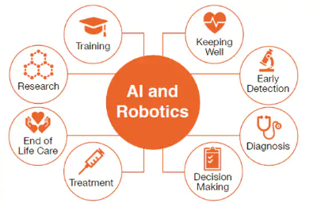

Improvement in Health Care
AI will become the bigger picture when it will come
to diagnosing patients. Since the AI is going to have
a bigger and better data base than actually doctor. AI
can quickly research different ways to treat a patient, as
well as; bringing up the outcomes on procedures.

Agircultural Change
With the help of AI, farmers will be able to delivery with higher
volumes to help with the growth of the populations. As well as, robots
can monitor the health of crops and soil. Having a better understand of
weather patterns to know when it is right to plan current crops. AI can help
farmers know when product is ready to be picked to reduce the waste.